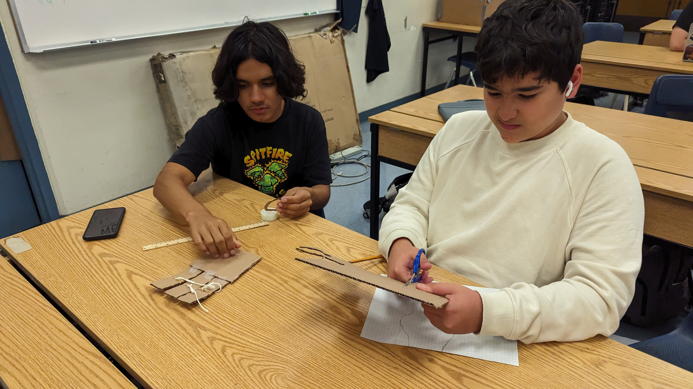
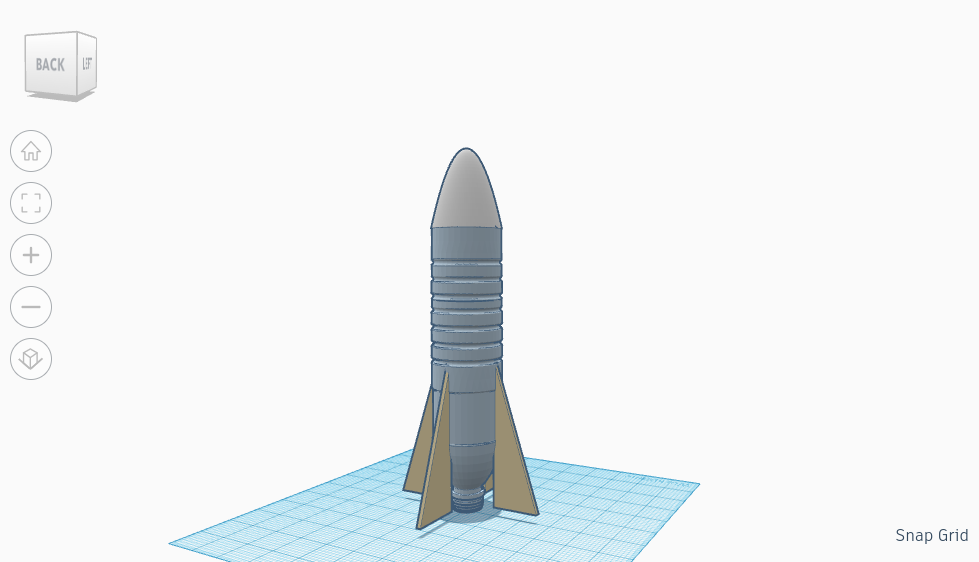
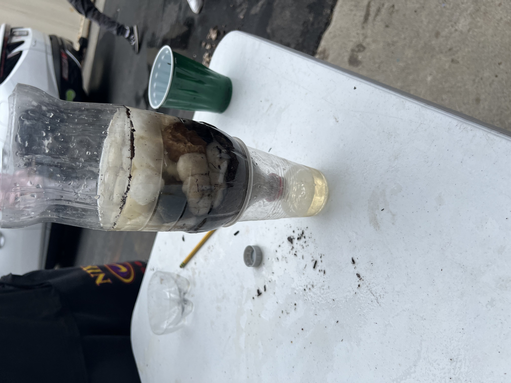

8/25/23 - This week I Learned that working in a team is beneficial, but harder than working by ourselves. From Mr.Pool's first slide I learned about the engineering process and how to correcty use tools. In his second slide I learned how to safely use tools and what equipment I need to wear to stay safe.
This weekend I am going to go to one of my friends house, who moved. This weekend my little cousins will come over to my house to learn to swim.
My Favorite Food Recipe

9/1/23 - This week I learned how to CAD a refrigerator with Tinkercad. On Mr. Pool's slide show I leaned that being safe is the number one rule of this class.
I learned that mechanical engineering is the most used engineering out of all the engineering types. When designing my project on tinkercad, I made a fridge. When our entire classes projects were done a judge voted on whoes project was the best. 
9/8/23 - This week I made a Rube Goldberg machine on tinkercad. Mr. Pool put us in groups to make a project that pops a balloon. In my tinkercad project we used a ramp, lever, wheel and axle.
My teammates in my group are Joshua Solis and Jack Abrams. We are group 5 and we are going to win because we are the best. The hardest part of the project will be making it in real.

9/15/23 + 9/22/23 - Last week My group and I made a Rube Goldberg machine in real life. We popped a balloon with a needle which got pushed by a baseball. The hardest part was to make the car move and pop the balloon. The easiest part was making the ramp because all we had to do was cut rectangles.
This week We had done two challenges. The first challenge was to make a paper boat and make it flote above water with wieghts on, which we leaned that the best paper boats have to have the most surface area. The second challenge was that we had to make an E and mesure the angles. After making the E we had to trade Es and make the other perosn's E with their mesurments.

10/6/23 - This week I learned that bioengineering is when people mimic organisms to get their extrodinary abilities. Another aspect of bioengineering is making fake organs to survive, such as the silicon heart which can pump for 30 minutes then decompose. This week I desiegned a prosthetic hand made of cardboard which had to pick up a empty water bottle without messing up. At first my partner and I had no idea what we were doing, but later on we realized we could use ruberbands and string together to mimic tendons in your arm. I have no idea on what I could do to improve my hand, because I worked on it for all of 7nth period with no breaks for 2 days.
This weekend instead of going to homecoming im going to go to six flags with my friends, we are going to go for the haunted house form 10:30 a.m. till midnight.

10/13/23 - This week I learned about arospace engineering. I learned that the 4 forces of flight are drag, weight, lift, thrust. I learned that arospace engineering works in space, planes, and rocketships. Satelites are made to look at the earth which are built by arospace engineers. Right now we are working on a rocket made out of cardboard and glue. We are going to be workingon this project for two weeks. One thing about this class that I enjoy are the challenges, because they are hard and fun to do, but I don't loose points if I mess up.
BOM

10/20/23 - This week I learned that making rockets and airplanes are harder than they seem, even if your making a smaller version with just a bottle and cardboard. My group and I made a bottle rocket this week, we expected it to go far, but it curved during the launch and hit someone who was sitting. We made our rocket with a 2 leter soda bottle, cardboard, and hot glue. We had launched our rocket twice the second time we put a lot of water in it and launched, but nothing happened because the rocket was too heavy to move.
10/26/23 - This week I learned about environmental engineering and how we can use it to get more natural recoucers. I learned that environmental engineers use lots of filters to turn ditry poop water into clean drinkable water. This weekend I am excited to watch the new fnaf movie with all of my friends. This week we had went into groups of 2 to make water filters that turn dirty water into clean water. My project didn't make the water super clean, but it made the water look much cleaner and drinkable.

11/3/23 + 11/9/23 - This last week I learned about electrical engineering and how electricity moves through a current. I learned about ohms law and the formulas for current, resistance, and volage. I also learned how to calculate voltage, resistance, and current. I made an electrical circut on tinkercad which powered an LED with a resister. Last weekend I started playing fortnite again with my friends and hit gold.
This week I learned how to make electrical circuts in real life. I also learned how to program anologe batteries. I learned how to make LEDs flash like christmas lights.